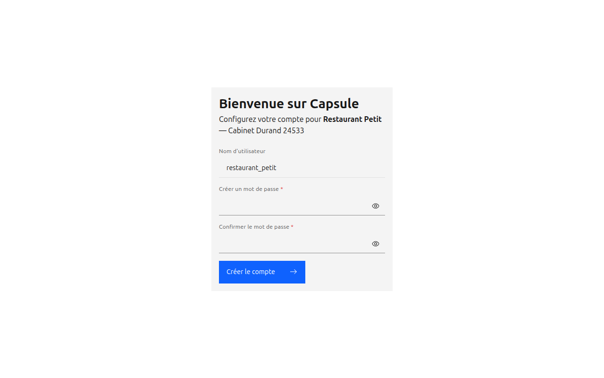
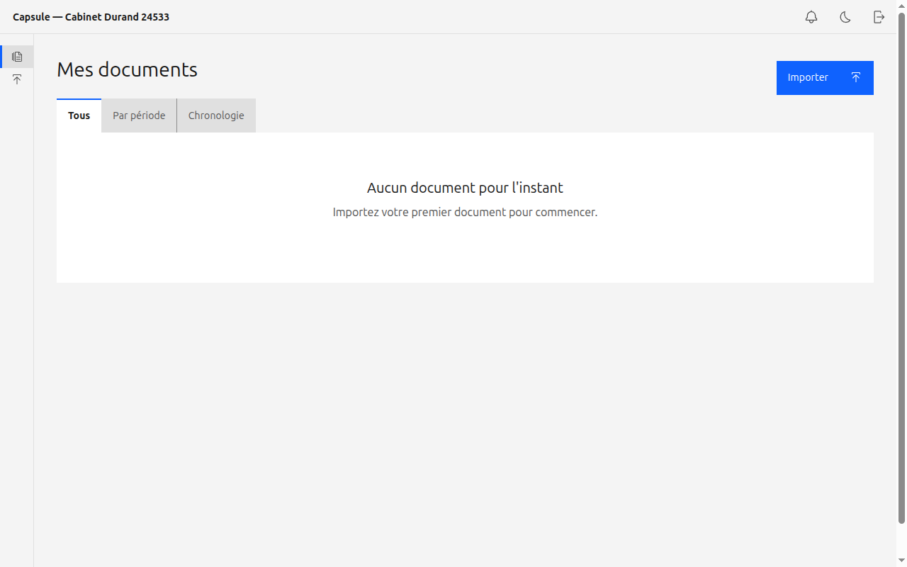
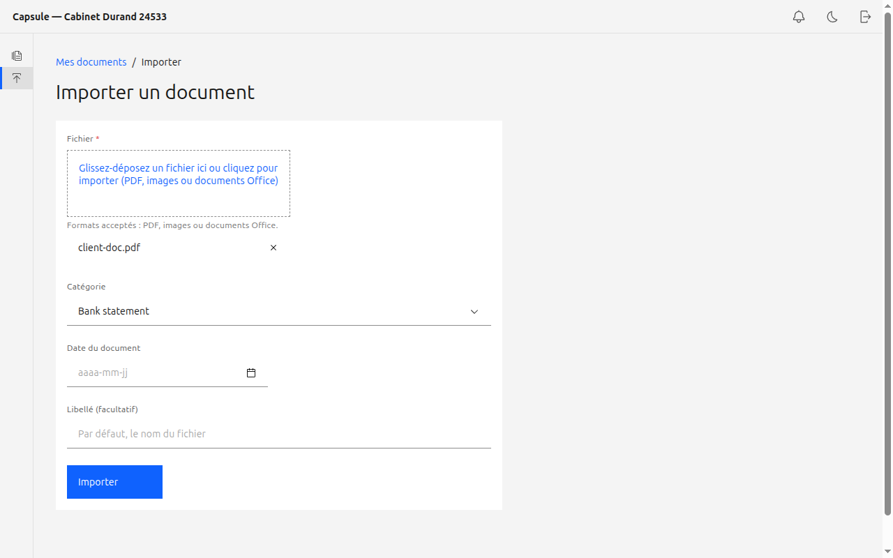

Votre cabinet comptable utilise Capsule pour recevoir vos documents en toute sécurité,
au même endroit. Vous seul avez accès à vos documents. Ce guide vous montre comment
activer votre compte et déposer vos pièces, étape par étape.
Vous — le clientVotre comptable — vous a envoyé un lien d'invitation
01
Activer votre compte
Ouvrez le lien d'invitation envoyé par votre comptable.
Choisissez un mot de passe (au moins 10 caractères) et confirmez-le.
Cliquez sur Créer le compte. Vous êtes directement connecté à votre espace.

La page d'activation : choisissez votre mot de passe.
Le lien d'invitation ne fonctionne qu'une seule fois. S'il est expiré ou déjà utilisé, demandez-en un nouveau à votre comptable.
02
Votre espace « Mes documents »
Après connexion, vous arrivez sur Mes documents.
L'onglet Tous liste vos documents ; Par période les regroupe par année / mois ; Chronologie montre l'historique de vos dépôts.
Cliquez sur un document pour l'ouvrir, le consulter et le télécharger.

Votre espace personnel de documents.
03
Importer un document
Cliquez sur Importer (en haut à droite) ou sur Importer dans le menu de gauche.
Glissez-déposez votre fichier ou cliquez pour le choisir (PDF, image ou document Office).
Sélectionnez une catégorie et la date du document si vous les connaissez.
Cliquez sur Importer. Votre comptable est automatiquement informé.

Importer un document depuis votre espace.
Astuce : renseigner la catégorie et la date aide votre comptable à classer vos documents automatiquement par période.